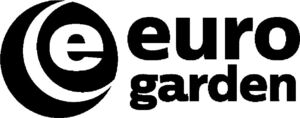

Trade Mark Journal No.2025/025 20 June 2025
WO0000001843377 (1,6,7,8,9,11,12,17,18,19,20,21,22,24,26,27,28,31)
Office of origin: Italy
Date of International Registration:25 October 2024
Date of designation in the UK:
25 October 2024

The trademark consists of an imprint depicting a stylized roundel inside which there is a stylized curved line that tapers toward the ends and which follows the circumference in parallel, inside which there is the letter E in fancy characters and outside this there are the wordings EURO GARDEN in fancy characters in which the wording EURO is of larger dimensions.
International priority date claimed: 4 June 2024
(Italy)
(302024000090826)
- Class 1
- Liquid fertilizers; chemicals for use in industry, science and photography, as well as in agriculture, horticulture and forestry; unprocessed artificial resins, unprocessed plastics; fire extinguishing and fire prevention compositions; tempering and soldering preparations; substances for tanning animal skins and hides; adhesives for use in industry; putties and other paste fillers; compost, manures, fertilizers; biological preparations for use in industry and science.
- Class 6
- Decorative metal profiles; garden stakes of metal; chicken wire; metal wire fences; window screens of metal; plant hangers of metal; stakes of metal for plants or trees; metal plant cages; wrought iron decorative artwork; awnings [structures] of metal; latticework of metal; thread of metal for tying-up purposes; greenhouses of metal, transportable; transportable greenhouses of metal for household use; gazebos of metal; gazebos primarily of metal; spring-retracted hose reels of metal; steel drums, sold empty; general purpose metal storage bins; common metals and their alloys, ores; metal materials for building and construction; transportable buildings of metal; non-electric cables and wires of common metal; small items of metal hardware; metal containers for storage or transport; safes.
- Class 7
- Lawnmowers [machines]; hedge cutters, electric; electric wood sawing machines; saw blades [parts of machines]; string trimmers for garden use; wire brushes [parts of machines]; saws [machines]; wet and dry vacuum cleaners; hand-held vacuum cleaners; power operated blowers for lawn debris; hydraulic pumps; electric water pumps; hedge shears, electric; mechanically operated hand-held crimpers; collets for power tools; dethatchers [machines]; power blowers for lawn debris; lawn trimmers, electric; machine tools, power-operated tools; motors and engines, except for land vehicles; machine coupling and transmission components, except for land vehicles; agricultural implements, other than hand-operated hand tools; incubators for eggs; automatic vending machines.
- Class 8
- Hedge cutters [hand-operated tools]; gardening scissors; palette knives; lawn rakes, hand-operated; weeding forks [hand fools]; rakes [hand tools]; knives; multi-tool knives; scissors; gardening shears; tree pruners; thistle extractors [hand tools]; weed diggers, hand-operated; trowels [gardening]; lawn aerators [hand-operated tools]; saws [hand tools]; blades for hand saws; hand tools and implements, hand-operated; cutlery; side arms, except firearms; razors.
- Class 9
- Electronic metering devices for faucets; electric outlets incorporating timers; digital weather stations; knee-pads for workers; scientific, research, navigation, surveying, photographic, cinematographic, audiovisual, optical, weighing, measuring, signalling, detecting, testing, inspecting, life-saving and teaching apparatus and instruments; apparatus and instruments for conducting, switching, transforming, accumulating, regulating or controlling the distribution or use of electricity; apparatus and instruments for recording, transmitting, reproducing or processing sound, images or data; recorded and downloadable media, computer software, blank digital or analogue recording and storage media; mechanisms for coin-operated apparatus; cash registers, calculating devices; computers and computer peripheral devices; diving suits, divers' masks, ear plugs for divers, nose clips for divers and swimmers, gloves for divers, breathing apparatus for underwater swimming; fire-extinguishing apparatus.
- Class 11
- Lava rocks for use in barbecue grills; ceramic briquettes for use in barbecue grills; barbecues; charcoal grills; grills, electric; roasting apparatus; furnace grates; drinking fountains; ornamental fountains; irrigation sprinklers; solar lamps; ventilating fans; heat guns; apparatus and installations for lighting, heating, cooling, steam generating, cooking, drying, ventilating, water supply and sanitary purposes.
- Class 12
- Wheelbarrows; vehicles; apparatus for locomotion by land, air or water.
- Class 17
- Watering hose; pipe couplings and joints, not of metal; rings of rubber for use as pipe connection seals; junctions, not of metal, for rigid pipes; garden hoses; threads of plastic materials, other than for textile use; unprocessed and semi-processed rubber, gutta-percha, gum, asbestos, mica and substitutes for all these materials; plastics and resins in extruded form for use in manufacture; packing, stopping and insulating materials; flexible pipes, tubes and hoses, not of metal.
- Class 18
- Beach parasols; patio umbrellas; covers for parasols; leather and imitations of leather; animal skins and hides; luggage and carrying bags; umbrellas and parasols; walking sticks; whips, harness and saddlery; collars, leashes and clothing for animals.
- Class 19
- Cast stone garden and household ornaments; branching pipes, not of metal; chainlink fencing, not of metal; porches [structures], not of metal; fences, not of metal; railings, not of metal, for fences; floor tiles, not of metal; fence posts, not of metal; greenhouse frames, not of metal; pre-fabricated greenhouses, not of metal; lawn edgings, not of metal; materials, not of metal, for building and construction; rigid pipes, not of metal, for building; asphalt, pitch, tar and bitumen; transportable buildings, not of metal; monuments, not of metal.
- Class 20
- Garden furniture; garden tables; cast stone household and garden furniture; chaise longues; folding tables; beach beds; reclining chairs; chairs [seats]; chair cushions; plant stands [furniture]; stakes, not of metal, for plants or trees; flower-pot pedestals; garden stakes, not of metal; chests, not of metal; cushions; mattress cushions; support stands [furniture]; plant stands; plant hangers, not of metal; hose hangers, not of metal; hose holders, not of metal; picnic benches; tent pegs, not of metal; rocking chairs; towel hooks, not of metal; wooden shelving [furniture]; shelving units; storage racks; stools; porch swings; saw horses, furniture, mirrors, picture frames; containers, not of metal, for storage or transport; unworked or semi-worked bone, horn, whalebone or mother-of-pearl; shells; meerschaum; yellow amber.
- Class 21
- Spray irrigation attachments for garden hoses; spray irrigation nozzles for garden hoses; oven mitts; barbecue tongs; brushes for cleaning barbecue grills; garden syringes; spray nozzles for garden hoses; plant bowls; holders for flowers and plants [flower arranging]; flower bowls; floor vases; nozzles for watering hose; buckets; foldable buckets; vases; flower pots; saucers for flower pots; earthenware jars; brooms; broom handles; window-boxes; barbecue turners; watering cans; fireplace brushes; pot cleaning brushes; barbecue forks; dishes; corn holders; cooking skewers of metal; thermally insulated bags for food or beverages; corkscrews with knife; meal trays; gardening gloves; decanters; dust-pans; household or kitchen utensils and containers; cookware and tableware, except forks, knives and spoons; combs and sponges; brushes, except paintbrushes; brush-making materials; articles for cleaning purposes; unworked or semi-worked glass, except building glass; glassware, porcelain and earthenware.
- Class 22
- Netting for protection against birds and insects; silage bags; raffia; hammocks; all-purpose tarpaulins of plastic; ropes and string; nets; tents and tarpaulins; awnings of textile or synthetic materials; sails; sacks for the transport and storage of materials in bulk; padding, cushioning and stuffing materials, except of paper, cardboard, rubber or plastics; raw fibrous textile materials and substitutes therefor.
- Class 24
- Oilcloth for use as tablecloths; tablecloths of textile; textiles and substitutes for textiles; household linen; curtains of textile or plastic.
- Class 26
- Artificial plants, other than Christmas trees; lace, braid and embroidery, and haberdashery ribbons and bows; buttons, hooks and eyes, pins and needles; artificial flowers; hair decorations; false hair.
- Class 27
- Floor mats, fire-resistant, for fireplaces and barbecues; beach mats; borders being wall decorations in the nature of wall coverings; artificial turf; mats; carpets, rugs, mats and matting, linoleum and other materials for covering existing floors; wall hangings, not of textile.
- Class 28
- Water pistols; rackets; games, toys and playthings; video game apparatus; gymnastic and sporting articles; decorations for Christmas trees.
- Class 31
- Flowering plants, natural; flower bulbs; grass seeds; raw and unprocessed agricultural, aquacultural, horticultural and forestry products; raw and unprocessed grains and seeds; fresh fruits and vegetables, fresh herbs; natural plants and flowers; bulbs, seedlings and seeds for planting; live animals; foodstuffs and beverages for animals; malt.
EUROSPIN ITALIA S.P.A.
Representative: Dr. Modiano & Associati SpA, Via Meravigli, 16, I-20123 Milano, ITALY